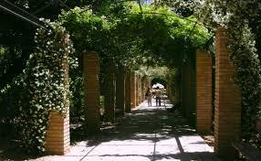
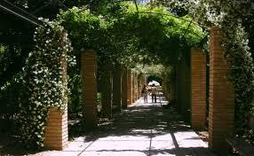
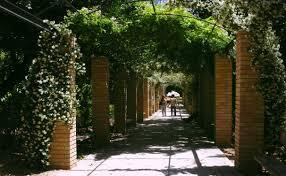

Related Photos
 

Photo by Randy Connolly
This photo of conservatory Pond in central park in New York was taken on october 22, 2011 with a Canon camera.

By Ricardo on September 15, 2015
Beautiful view
By Susan on October 1, 2015
I love Central park